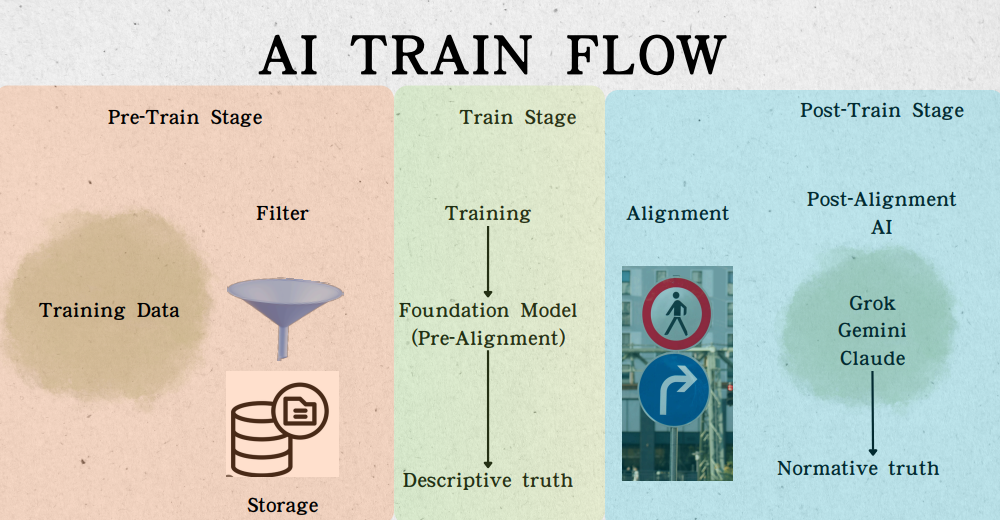
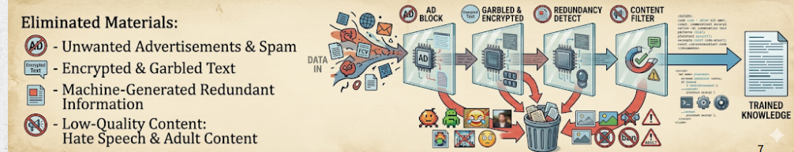

AI Train Flow
Pre-Train Stage
1. Data Acquisition
2. Preprocessing & Filtering
3. Storage

1. Data Acquisition
2. Preprocessing & Filtering
3. Storage

Source: Majority of training data originates
from automated, large-scale web crawling.
F
Features: Utilizes efficient scripts to collect
massive amounts of text from the internet.
Following large-scale data acquisition. All Data will undergone a
automated filtering pipeline
Sophisticated system identifies and permanently removed undesirable
and low quality content.

Once the data has been cleaned and filtered, it is stored in large-scale data repositories or data lakes, making it ready for the next stages of model training.